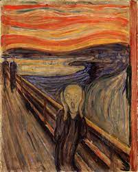

İşte WWF'nin web sitesinden bir alıntı:
WWF 50 yıldır doğanın geleceğini koruyor. Dünyanın önde gelen koruma organizasyonu, WWF 100 ülkede çalışıyor ve aşağıdakiler tarafından destekleniyor: Amerika Birleşik Devletleri'nde 1,2 milyon üye ve dünya genelinde 5 milyona yakın.
Tarayıcılar genellikle q öğesinin etrafına tırnak işaretleri ekler.
WWF'nin amacı: İnsanların doğayla uyum içinde yaşadığı bir gelecek inşa etmek.
Bu WHO 1948 yılında kurulmuştur.
HTML adres öğesi, bir belgenin veya makalenin iletişim bilgilerini (yazar/sahip) tanımlar.
John Doe tarafından yazıldı. Bizi şu adreste ziyaret edin: Örnek.com Kutu 564, Disneyland Amerika Birleşik DevletleriTarayıcılar genellikle alıntı öğelerini italik olarak görüntüler.
Edvard Munch tarafından Çığlık. 1893 yılında boyanmıştır.
Tarayıcınız çift yönlü geçersiz kılmayı (bdo) destekliyorsa, sonraki satır sağdan sola (rtl) yazılacaktır:
Bu satır sağdan sola yazılacak